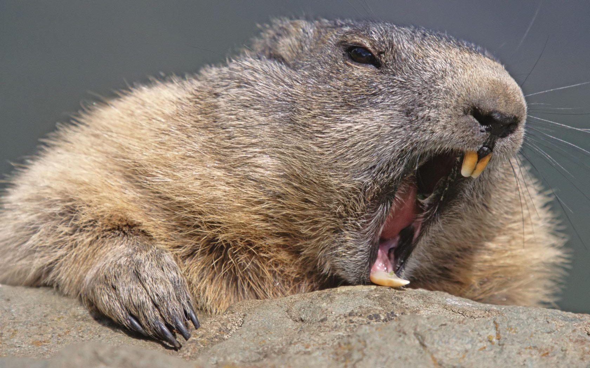
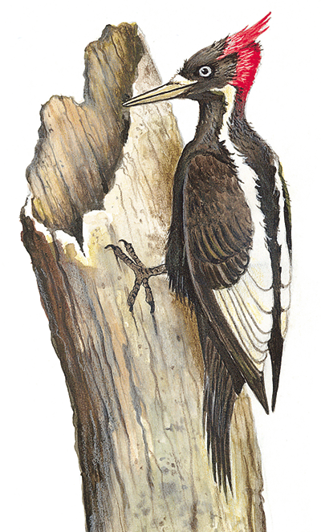

|  |
On a sunny day, in the morning, this beaver chews 2,662 trees and this woodpecker pecks 3,102 trees.
Later in the afternoon, the beaver chews 539 trees more while the woodpecker is sleeping. How many trees does the beaver chew that day? How many less trees does the woodpecker touch than the beaver? |
 |